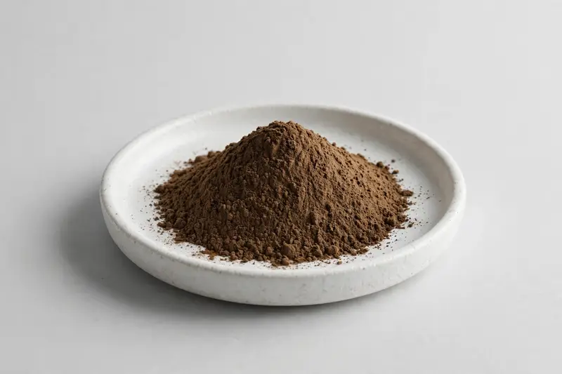

Rehmannia glutinosa — a root extract supplied for traditional botanical and multi-herb formulation work.

Overview
Rehmannia glutinosa root is a staple in East Asian botanical formulations, traded as a dark brown to black extract powder with a distinctly sweet, heavy profile. Buyers commonly specify it as a 10:1 extract or against a catalpol marker, depending on whether ratio declaration or measurable standardization suits their blend. As a Xi'an-based trading company sourcing through vetted partner producers, we confirm feasible ranges against your target spec honestly.
Specifications below reflect commonly requested options in the market — not a stock list. Share your target spec and we'll confirm exactly what we can supply, honestly.
| Specification | Details |
|---|---|
| Botanical identity | Rehmannia glutinosa root extract, dried powder (often described as prepared or processed root extract) |
| Marker compound | Catalpol or extract ratio — commonly requested: 10:1, or catalpol content stated by HPLC |
| Appearance | Brown to dark brown fine powder |
| Analytical methods | Methods referenced in buyer specifications: HPLC |
| Mesh size | Typically 80–100 mesh (confirm per inquiry) |
| Testing | COA/TDS arranged on request; scope agreed per your spec |
Applications
Documentation
We don't claim in-house labs or certifications we don't hold. COA and TDS documents can be arranged on request, and testing scope is agreed against your specification before supply.
FAQ
Related products
Lycium barbarum
Key marker: LBP
View specs →Sophora japonica
Key marker: Quercetin
View specs →Polygonum cuspidatum
Key marker: Trans-Resveratrol
View specs →Camellia sinensis (pu-erh)
Key marker: Polyphenols / theabrownins
View specs →Arctium lappa
Key marker: 10:1 or inulin
View specs →Send your target spec and volumes — we'll respond with a tailored quotation.
Request a Quote